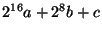

Las llamadas al sistema, que son las principal interfaces del núcleo mostradas a los procesos, generalmente permanecen igual a través de las versiones. Una nueva llamada al sistema quizás sea añadida, pero usualmente las viejas se comportarán igual que de costumbre. Esto es necesario para la compatibilidad regresiva -- una nueva versión del núcleo no se supone que romperá con los procesos regulares. En la mayoría de los casos, los ficheros de dispositivo permanecerán igual. En el otro caso, las interfaces internas dentro del núcleo pueden y sufren cambios entre las versiones.
Las versiones del núcleo Linux están divididas entre las versiones estables
(n. número par
número par .m) y las versiones en desarrollo (n.
.m) y las versiones en desarrollo (n. número impar
número impar .m).
Las versiones en desarrollo incluyen todas las nuevas ideas, incluyendo aquellas
que serán consideradas un error, o reimplementadas, en la siguiente versión. Como
resultado, no puedes confiar en que la interfaz permanecerá igual en estas
versiones (lo cual es porque no las soportamos en este libro, es mucho trabajo
y caducarán rápidamente). En las versiones estables, por otro lado, podemos
esperar que al interfaz permanezca sin cambios a través de las versiones
de correción de fallos (el número m).
.m).
Las versiones en desarrollo incluyen todas las nuevas ideas, incluyendo aquellas
que serán consideradas un error, o reimplementadas, en la siguiente versión. Como
resultado, no puedes confiar en que la interfaz permanecerá igual en estas
versiones (lo cual es porque no las soportamos en este libro, es mucho trabajo
y caducarán rápidamente). En las versiones estables, por otro lado, podemos
esperar que al interfaz permanezca sin cambios a través de las versiones
de correción de fallos (el número m).
Esta versión de la GPMNL incluye soporte para la versión 2.0.x y la versión 2.2.x del núcleo Linux. Como hay diferencias entre las dos, esto requiere compilación condicional dependiendo de la versión del núcleo. La forma con la que hacemos esto es usando la macro LINUX_VERSION_CODE. En la versión a.b.c. de un núcleo, el valor de esta macro debería de ser . Para obtener el valor específico de una versión específica del núcleo, podemos usar la macro KERNEL_VERSION. Como no está definida en 2.0.35, la definiremos nosotros si es necesario.